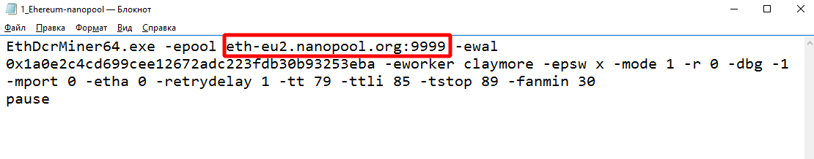
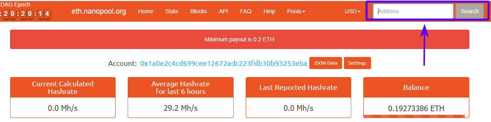

Самый быстрый Ethereum/Ethash майнер с самой низкой комиссией
EthDcrMiner64.exe -epool eth-eu2.nanopool.org:9999 -ewal 0x1a0e2c4cd699cee12672adc223fdb30b93253eba -eworker claymore -epsw x -mode 1 -r 0 -dbg -1 -mport 0 -etha 0 -retrydelay 1 -tt 79 -ttli 85 -tstop 89 -fanmin 30
pause Так выглядит адрес пула в пакетном файле прогрммы
EthDcrMiner64.exe -epool eth-eu2.nanopool.org:9999 -ewal ВАШ_КОШЕЛЕК -eworker Claymore -mode 1 -r 0 -dbg -1 -mport 0 -etha 0 -retrydelay 1 -tt 79 -ttli 85 -tstop 89 -fanmin 30
pause
Для выбора наиболее подходящего для вас сервера в зависимости от вашего местоположения используйте:
| Расположение | Адрес | Стратум порт |
|---|---|---|
| Европа | eth-eu1.nanopool.org | 9999 |
| Европа | eth-eu2.nanopool.org | 9999 |
| Восток США | eth-us-east1.nanopool.org | 9999 |
| Запад США | eth-us-west1.nanopool.org | 9999 |
| Азия | eth-asia1.nanopool.org | 9999 |
| Япония | eth-jp1.nanopool.org | 9999 |
| Австралия | eth-au1.nanopool.org | 9999 |
В этом примере мы использовали Европейские сервера, так что теперь внутри вашего текстового файла вы должны иметь:
EthDcrMiner64.exe -epool eth-eu1.nanopool.org:9999 -ewal Ваш_Ethereum_Address.имя_фермы -epsw x
Замените «Ваш_Ethereum_Address» на свой адрес кошелька Ethereum (который начинается с 0x…), скопируйте его из другого текстового файла и вставьте его здесь.
Замените «имя_фермы» на любое имя, которое вы хотели бы создать для своего майнера. Мы будем использовать «MiningRig1» для нашего примера, так что теперь у вас есть:
setx GPU_FORCE_64BIT_PTR 0
setx GPU_MAX_HEAP_SIZE 100
setx GPU_USE_SYNC_OBJECTS 1
setx GPU_MAX_ALLOC_PERCENT 100
setx GPU_SINGLE_ALLOC_PERCENT 100
EthDcrMiner64.exe -epool eth-eu1.nanopool.org -wal 0x9147460980c93629e775783148591b7d0a0cbf2d.MiningRig1 -epsw x
Сохраните ваш файл как пакетный файл с расширением bat. Для этого выберите «Файл»> «Сохранить как», а затем в поле выберите его имя и введите «.bat» после имени. В поле «Тип файла» выберите «Все файлы» и нажмите «Сохранить».
Поздравляем! Теперь у вас есть готовый пакетный файл для nanopool! Создайте ярлык для нового Bat файла и отправьте его на рабочий стол.
Что бы посмотреть свой баланс и статистику манйнинга, достаточно просто указать адрес свеого кошелька и нажать кнопку Show
 узнть баланс
Используйте файлы "epools.txt" и "dpools.txt" чтобы указать дополнительные пулы. Эти файлы имеют текстовый формат, по одному пулу в строке. Будет предпринято 3 попытки соединения. Майнер разъединяет автоматически, если пул не отправляет новых заданий в течение длительного времени или отклоняет слишком много шар.
Если первый символ строки ";" или "#" - строка будет проигнорирована.
Вы так же можете посмотреть уже готовый пример, скачав архив с последней версией программы.
Проект Claymore представляет самые последние версии программного обеспечения (исправляет все ошибки и баги предыдущих версий)! Поэтому если у Вас старая версия, мы настоятельно советуем скачать последнюю версию Claymore's по ссылкам ниже, так как с каждым выходом новой версии добыча Эфира становится выгоднее!
Ресурсы для разработчиков